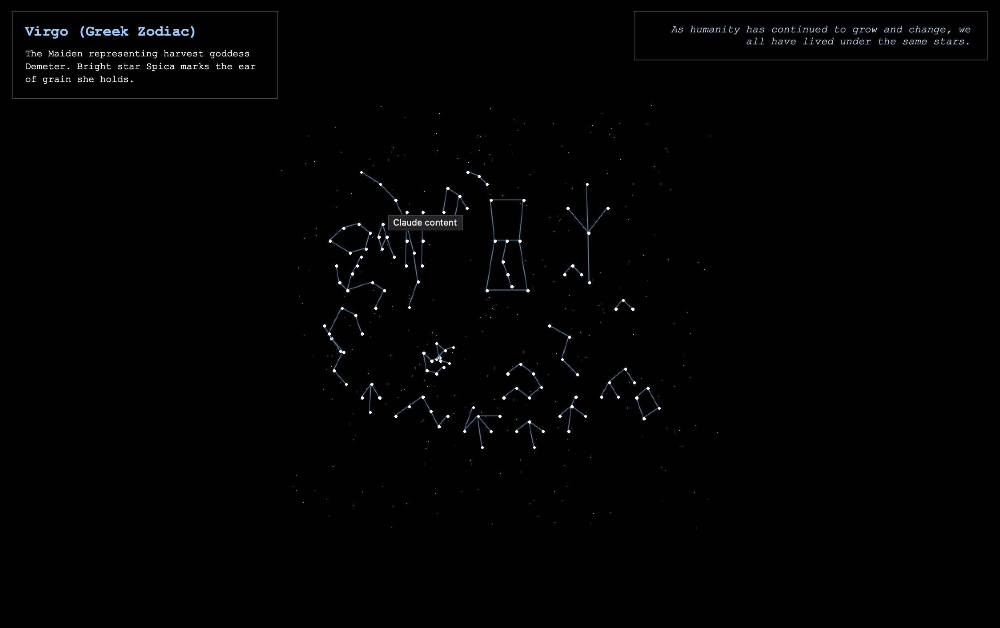
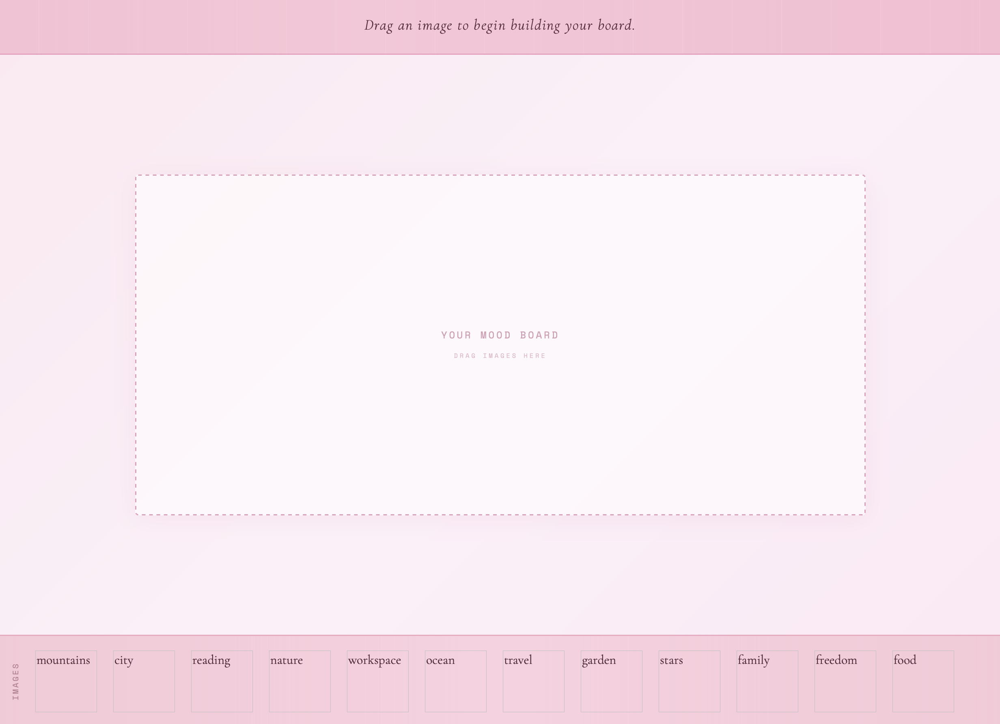
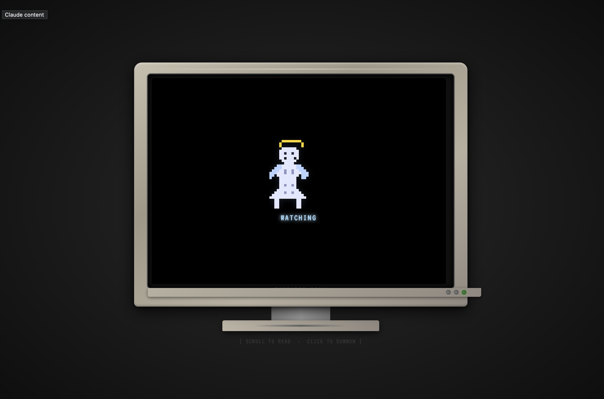
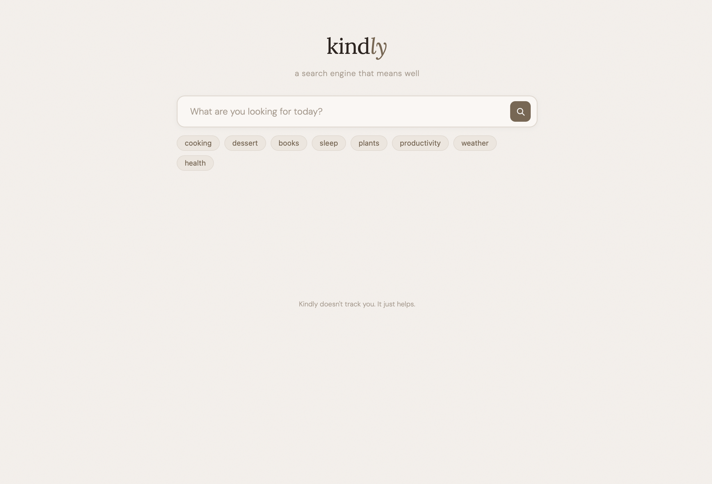
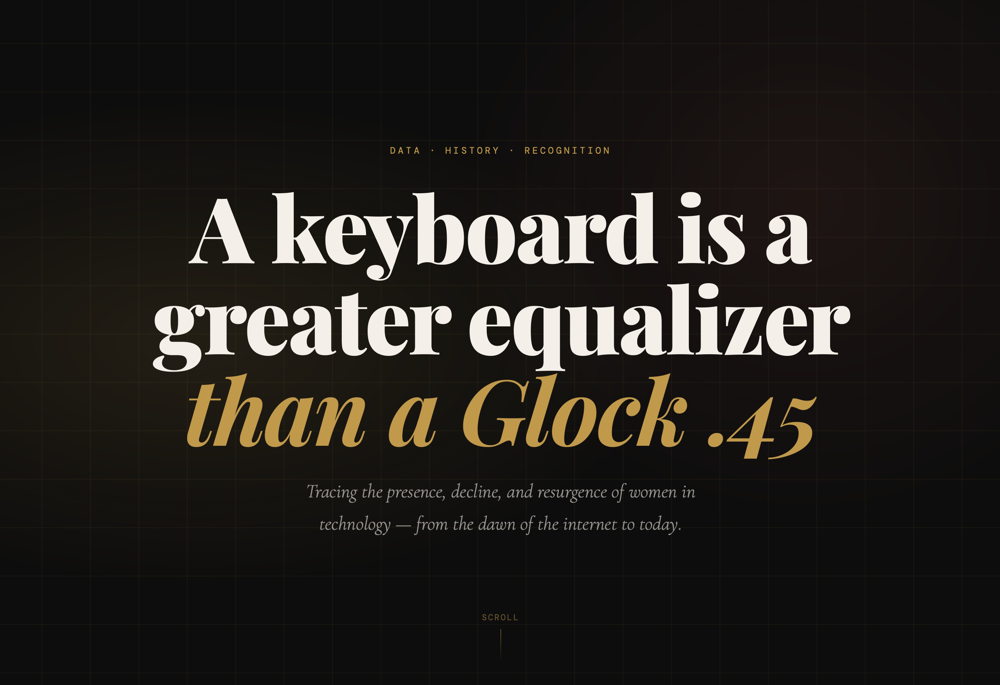
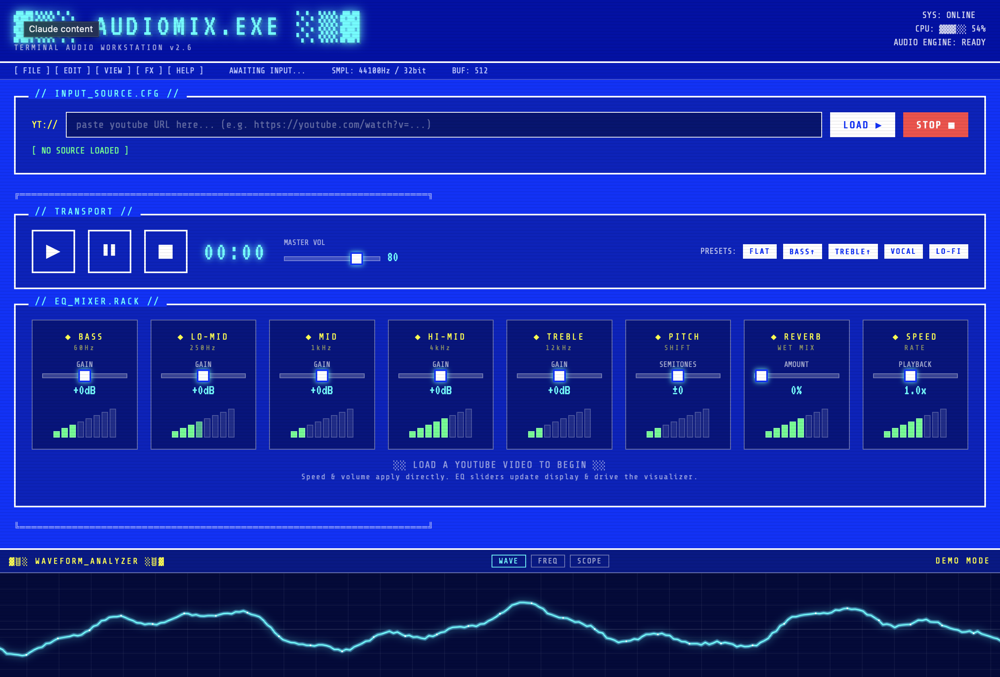

welcome to my IML300 website! i hope u enjoy ur stay ♡
created in spring, 2026.
This interactive audio visualizer is meant to showcase the range of sounds within K-Pop! As a long time fan
I’ve heard several opinions about what K-Pop is, and one of the most common ones is that “All K-Pop sounds the
same!”
There’s nuance as to why there are large trends within K-Pop, leading to similar songs, but to say the
whole genre sounds the same is insane. The four songs I chose for this audio visualizer are from different
eras of K-Pop, and they all sound vastly different. Even if you couldn’t hear the difference, this visualizer
allows you to see it!
My hyper narrative website was inspired by my love for Greek mythology and poetry, thus it is named “The Altar Of Mnemosyne” after the Greek goddess of memory. This project functions as a web archive of my poetry, precious memories that I decided to recreate with words, based on the emotions that they represent for me. Even if the memory is now a bit fuzzy for me the feelings and nostalgia they evoke are extremely clear to me, and I wanted to make sure that I had somewhere that kept all of my work in one spot. See this project as a little peak into my mind and memory :)

I used Claude.ai to make an interactive planetarium website! I started with Greek constellations and gradually tried to add more. This was my first time vibe coding, and while Claude.ai produced great results I found myself needing to correct it several times (i.e. it originally generated Orion inaccurately).
Based on American Artist’s “Black Gooey Universe”, my interface was created using Claude.AI as a visual
representation of what black gooey might be.
Click the black goo to multiply it or drag it around the screen for a slow, interactive, meditative
experience. Bring the white screen back to its original form of blackness.

This website is inspired by Molly Soda’s play “Trivial Pursuit,” which is about a vision boarding party. I took a slightly different turn and made the website ask the user a question with each image that is put up, having the user reflect if the vision they are piecing together is truly their own.

Inspired by Chia Amisola’s article “Documenting the Divine”, “Many technologies have complicated how we perceive faith. Religious scholar Jill Krebs writes, ‘the highest number of reports of apparitions does not come from regions with the highest numbers of Catholics but from areas where more Catholics can access the Internet.’

I made an alternative, kinder search engine based on Brandon Gregory's "Design for Cognative Differences." When explaining where certain parts of designed failed for users who had anxiety, he pointed out small ways that a creator could amend their design to be more friendly!

For my vibe code this week I made an informational website based on a quote I found on the CyberFeminism Index, which you will find at the top of the web page. I loved the quote and wanted to find all the info I could about women in tech over time!

I asked Claude to make me an audio workstation based on an ASCII aesthetic, aiming to emulate DJ Dave's workspace for DJing. I find audio to be really cool but a bit intimidating, so I thought this layout could work for someone who wants to experiment with audio!
i was lowkey terrified of coding before i started this class. after a semester i can at least say that i
understand it a lot better!
thank you so so much to Q and Kelly for making coding a lot less intimidating and showing me all the amazing
things that can be created with code :)